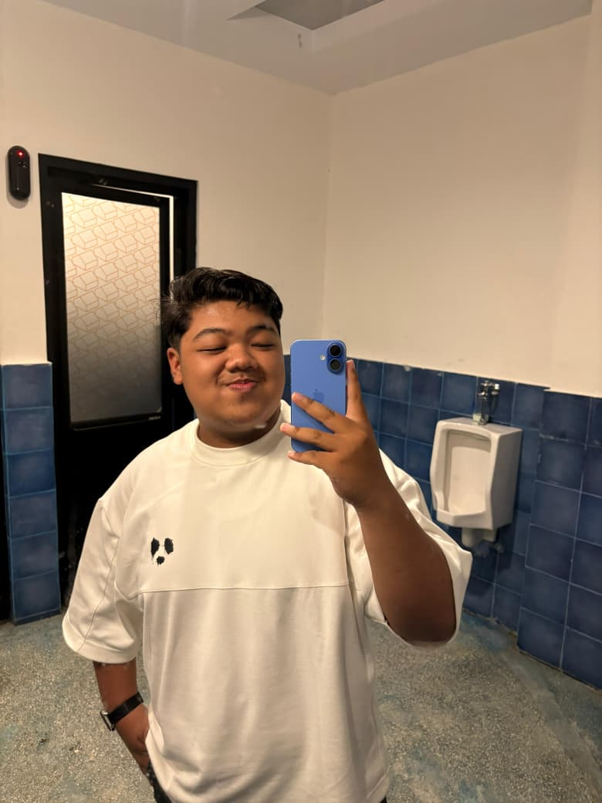
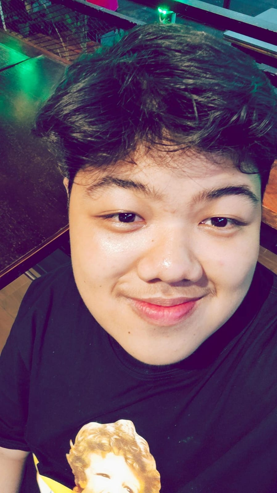
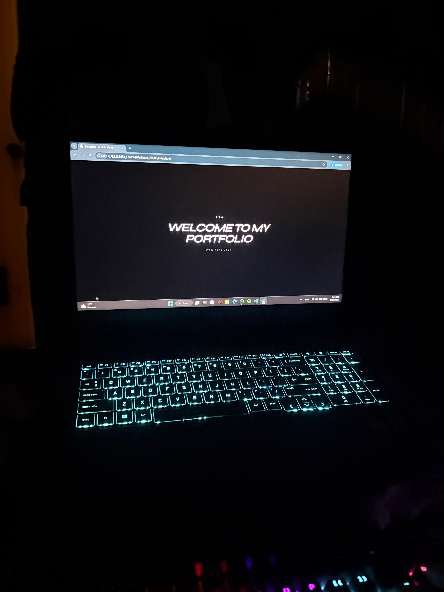
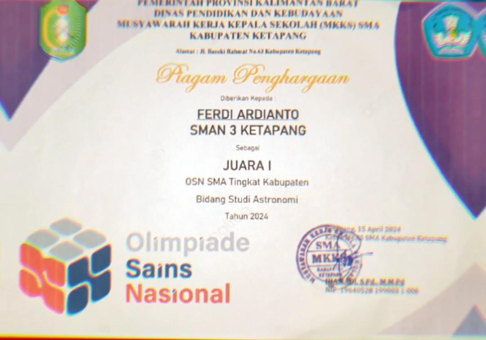
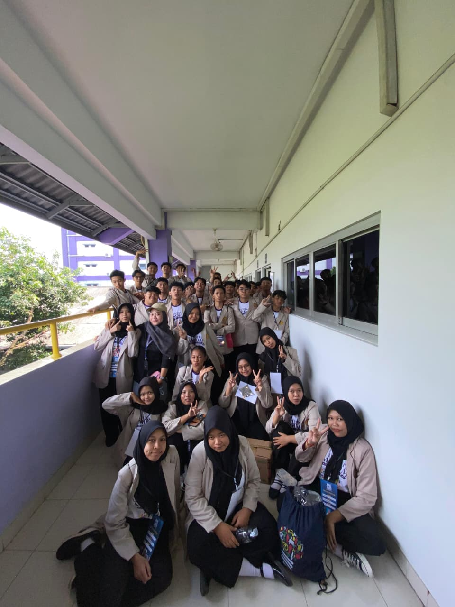
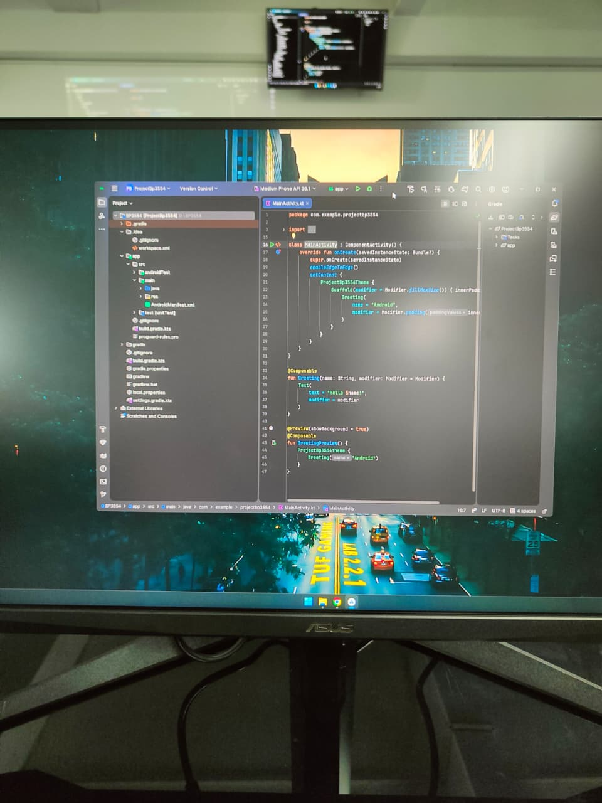
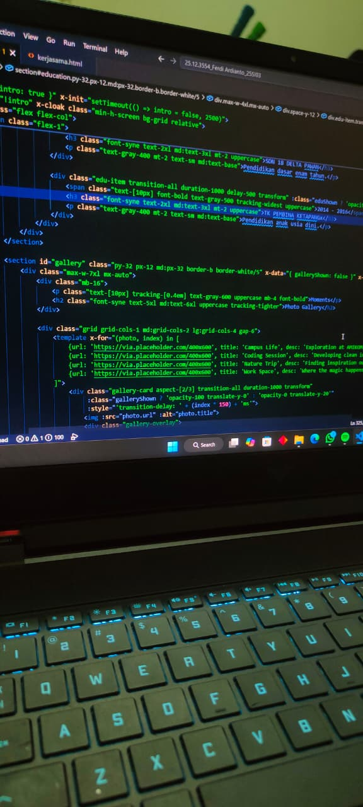
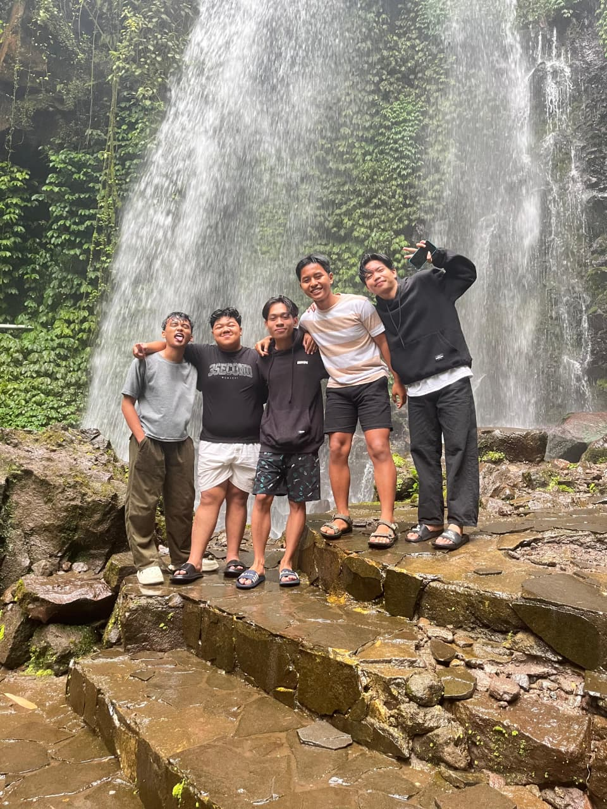

Frontend
Developer
Saat ini sedang mendalami fondasi fundamental dalam Pengenalan Perancangan Web. Fokus mengasah kemampuan menerjemahkan konsep struktur HTML5, estetika tata letak CSS3, dan prinsip responsivitas modern ke dalam baris kode murni, guna menciptakan antarmuka digital yang tidak hanya visualnya clean, tetapi juga fungsional bagi pengguna.
About Me
Ferdi
Ardianto
Halo! Saya Ferdi Ardianto, seorang Mahasiswa yang saat ini sedang menempuh semester 2 di Universitas AMIKOM Yogyakarta (Angkatan 2025). Perjalanan digital saya dimulai sejak lulus dari SMA Negeri 3 Ketapang, di mana ketertarikan saya pada dunia teknologi dan visual mulai tumbuh. Saat ini, saya fokus mendalami pembuatan website yang tidak hanya clean dan responsif, tetapi juga memiliki estetika visual yang kuat. Dengan mengombinasikan logika pemrograman web dan desain antarmuka (UI) modern, saya berkomitmen untuk terus belajar dan menghadirkan pengalaman digital yang interaktif, optimal, dan ramah pengguna.
"Transforming creative visions from high school roots into modern, pixel-perfect digital experiences."

PORTOFOLIO

Web Portofolio

Sains Certificate
FRONTEND ARCHIVE • FRONTEND ARCHIVE
Riwayat Pendidikan
-
2025 — SEKARANG
Universitas AMIKOM Yogyakarta
S1 - Sistem Informasi
Yogyakarta, Indonesia -
2022 — 2025
SMA NEGERI 3 KETAPANG
Ilmu Pengetahuan Alam
Kalimantan Barat, Indonesia -
2019 — 2022
SMP NEGERI 6 KETAPANG
Pendidikan Dasar Menengah
Kalimantan Barat, Indonesia -
2013 — 2019
SD NEGERI 18 DELTA PAWAN
Pendidikan Dasar
Kalimantan Barat, Indonesia -
2011 — 2013
TK PEMBINA
Taman Kanak — Kanak
Kalimantan Barat, Indonesia
Bidang Keahlian & Skill
| No | Bidang | Deskripsi Kompetensi Teknis |
|---|---|---|
| 01 | Junior Fronted Developer | Slicing desain antarmuka (UI) menjadi kode halaman web yang responsif, rapi, dan interaktif menggunakan HTML5, CSS3, Bootstrap, dan Tailwind CSS |
| 02 | Android UI | Pengembangan tampilan antarmuka (layout XML) dan implementasi fungsi logika dasar pada aplikasi Android menggunakan bahasa Kotlin melalui Android Studio. |
| 03 | Photography | Kurasi aset komersial untuk pasar komersil global, optimasi metadata deskripsi Inggris di Shutterstock. |
Moments
Photo Gallery




Stock Photography
Aset gambar digital yang dikurasi khusus untuk kebutuhan komersial dan marketplace global seperti Shutterstock untuk melatih aspek visual.
Campus Life Docs
Arsip dokumentasi kegiatan perkuliahan, sesi coding, hingga momen esensial sepanjang perjalanan akademik saya di Universitas AMIKOM.
Geometry & UI/UX
Eksplorasi sudut pandang simetris, tata ruang kota, dan permainan pencahayaan alami untuk mengasah intuisi estetika desain antarmuka.
Video youtube
Selain menampilkan biodata dan portfolio, pada website ini saya juga menambahkan video YouTube favorit sebagai tambahan hiburan sekaligus untuk membuat tampilan website menjadi lebih menarik dan interaktif. Video ini ditampilkan menggunakan fitur embedded YouTube sehingga pengunjung dapat langsung menonton video tanpa harus keluar dari website.
Penggunaan embedded video juga membuat website terlihat lebih modern serta tidak monoton karena memiliki tambahan konten multimedia. Selain itu tampilan video dibuat responsive menggunakan Bootstrap agar tetap rapi ketika dibuka melalui laptop maupun handphone.
Tertarik Hubungi Saya?
Silakan klik tombol di samping untuk memulai diskusi proyek, penawaran kerja sama, atau sekadar menyapa mahasiswa Universitas AMIKOM Yogyakarta.